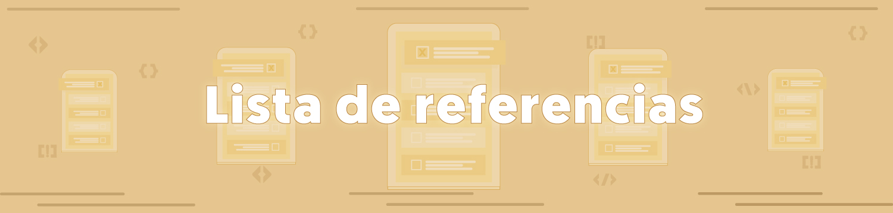

Lista de referencias
Unidad I
- Arnau, B. (2018). Gestión de proyectos informáticos: Desarrollo, análisis y control. Editorial ENI, ISBN: 9782409016400
- Baca, G. Evaluación de. Proyectos. Mc Graw Hill ISBN: 9786071517555
- Rodríguez, J. (2007). Gestión de proyectos informáticos: Métodos herramientas y casos. Editorial UOC, Barcelona. ISBN: 9788497885683
- Pressman, R. (2003). Ingeniería de software: un enfoque práctico. McGraw-Hill. ISBN 8448132149, 9788448132149
Unidad II
- Garriga, A. (2019). Guía práctica en gestión de proyectos: Aprende a aplicar las técnicas de gestión de proyectos a proyectos reales. Albert Garriga Rodríguez ISBN: 9788409155064
- Muñoz, M. (2023). El proyect manager del futuro. Claves para una gestión eficaz y humana de proyectos IT. Editorial Almuzara. ISBN: 9788411315647
- Nizhebetskyi, D. (2022). Practical Project Management: Proven Framework That Great Project Managers Use in the Real World. Editor independiente. ISBN: 9798430325251
Unidad III
- Baca, G. Evaluación de. Proyectos. Mc Graw Hill ISBN: 9786071517555Baca, G. Evaluación de. Proyectos. Mc Graw Hill ISBN: 9786071517555
- Croft, C. (2022). Project Management QuickStart Guide: The Simplified Beginner's Guide to Precise Planning, Strategic Resource Management, and Delivering World Class Results. ClydeBANK MEDIA IIc. ISBN: 9781636100593
- Toro, F. (2013) Administración de proyectos de informática. ECOE Ediciones. ISBN: 9789586488167
Páginas WEB
Unidad I
Unidad II
Unidad III